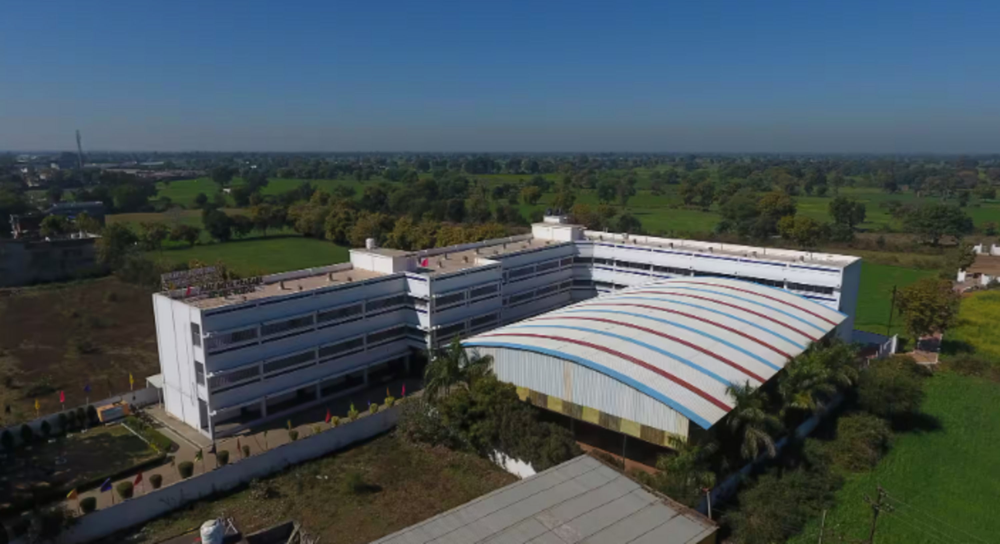

Latest News
ADMISSION OPEN FROM NUR TO XI 2025
Affiliated to CBSE | Affiliation No: 123456
Address: Ajay Satya Prakash Public School, Jabalpur(M.P)
The Ajay Satya Prakash Public School was founded in July 1992. The school started in the new campus at [Location] up to Senior Secondary Level with CBSE affiliation in July 2009. Our school is committed to academic excellence, co-curricular development, and moral values, ensuring students are prepared for life.
MANVI RAWAT
X - 94.2%
2024-25
KAVYANSH DUBEY
X - 93.5%
2024-25
SAMARTH SHIVHARE
X - 93.4%
2024-25
SATYAM DUBEY
X - 92%
2024-25
PRADYUMN KUMAR TIWARI
X - 91.2%
2024-25